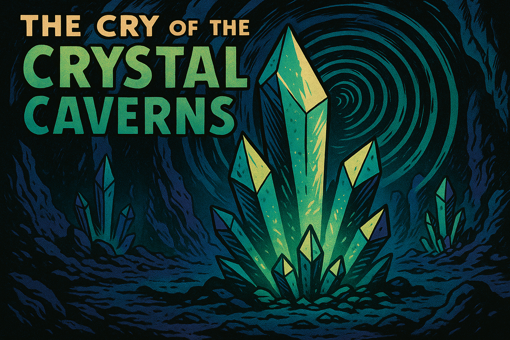
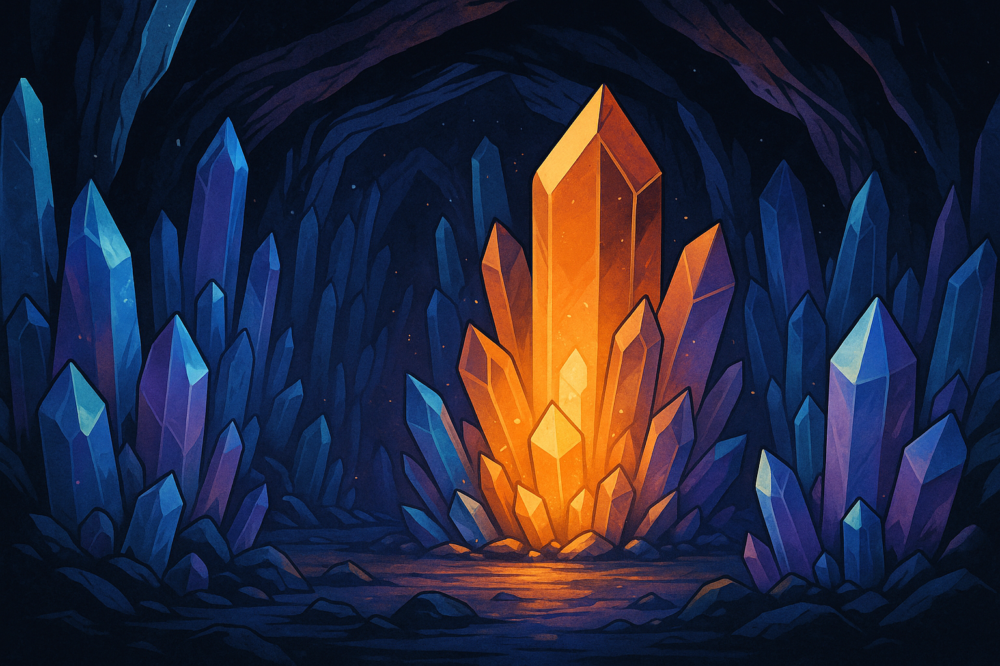

🎶 The Cry of the Crystal Caverns¶
Location of Origin: The Crystacore Caverns — Planet Draxyl IV, Deep Subsurface Layer

📍 Discovery¶
The Cry of the Crystal Caverns was first recorded by a team attempting to chart the subterranean waterways of Draxyl IV.
What they found instead was a labyrinth of massive, angular crystal formations that — under the right atmospheric pressure and emotional stress — produced resonant sound waves of such eerie beauty that two members of the expedition immediately decided to abandon civilization and become moss collectors.
📜 Historical Background¶
The Crystacore Caverns are believed to have formed from an ancient geological accident involving mineral-rich lava, quantum vibration pockets, and what geologists describe, in hushed tones, as “something that really shouldn’t have happened.”
Early native cultures revered the Caverns as the Sleeping Choir, believing the crystals contained the memories of the world before it learned embarrassment.
Attempts to map the full expanse of the Caverns have failed repeatedly, due to both the complex sonic interference patterns and the psychological effect known locally as “Echo Madness,” which manifests after prolonged exposure as spontaneous interpretive dance.
🔊 Acoustic Properties¶
- Primary Frequencies:
Ranging from infrasonic tremors to high-pitched crystalline shivers. - Rhythmic Structure:
Frequencies build and collapse unpredictably, resembling slow, mournful chants. - Known Effects:
- Temporary memory anomalies (forgetting why you entered the room... or planet).
- Hallucinatory visions of ancient, tragic romances between mineral formations.
🧪 Field Observations¶
- Response to Disturbance:
Crystals react musically to vibrations, sound, even rude glances. - Containment Strategy:
Impossible. Best observed with floating drones and a sturdy existential crisis plan. - Environmental Impact:
Surrounding flora grow in rhythmic spirals, suggesting low-frequency synchronization.

📖 Cultural Notes¶
Several spacefaring species consider a pilgrimage to the Crystacore Caverns a coming-of-age ritual.
Traditionally, participants are expected to listen in silence for at least three days and then compose a sonnet based on whatever existential truth they hallucinated.
Only 17% of participants complete the ritual without writing something about lost socks.
🧩 Curiosities Within the Curiosity¶
- Some crystals appear to “sing” more intensely during certain cosmic alignments, especially after free-floating poetry festivals.
- One expedition recorded an entire minor opera spontaneously performed by the Cavern during a severe magnetic storm.
- Rumors persist that deep within the Caverns lies a single crystal that only ever hums in languages spoken by extinct civilizations.
(Opera Research Division is still arguing about who gets to look for it.)
🧁 Lucy's Field Notes¶
Research Log — Lucy the Cat
Recorded during Crystal Cavern Expedition 9.
- "Sounds like glass ghosts throwing a surprise party for no one."
- "Tastes like ozone and bad decisions. Recommend observing with protective fur fluff."
- "If a crystal starts humming directly at you, either propose marriage or back away very, very slowly."
🎭 Current Opera Performances Featuring the Cry of the Crystal Caverns¶
- "The Fractured Echo Waltz" (winner of Most Existentially Confusing Duet, Year 78-AU)
- "Elegy for Forgotten Stones" (requires three sopranos, six tuning forks, and one very confused bat)
- "The Lament of Shards" (banned in five systems for causing excessive swooning)
📜 Access Classification¶
- Archive Status: Restricted Listening — Level 2 and above
- Access Requirements: Stable psychological profile or the willingness to accept new and deeply personal hallucinations.
- Listening Warning:
"Extended exposure may lead to sudden musical inspiration, philosophical despair, and/or extremely enthusiastic interpretive dance."
🚀 Final Remarks¶
The Cry of the Crystal Caverns remains a testament to the universe’s deep and abiding commitment to beauty, chaos, and extremely inconvenient acoustics.
Handle with awe.
Or at least, with appropriately sturdy shoes.